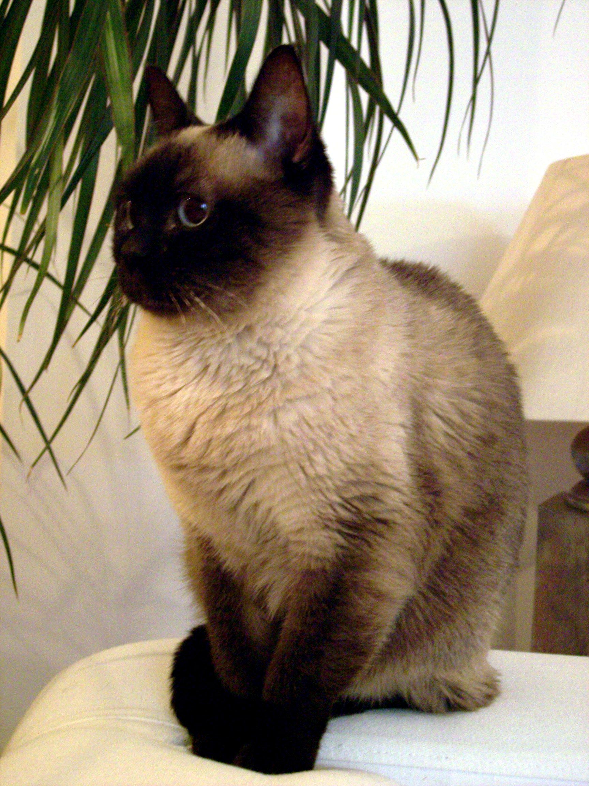

The
Siamese
cat
(Thai:
วิเชียรมาศ,
[wí.tɕʰīan.mâːt] (
listen),
rtgs: Wichianmat,
meaning "moon diamond") is one of the first distinctly
recognized breeds
of Oriental
cat.
One of several breeds native to Thailand
(formerly known as Siam),
the Siamese cat became one of the most popular breeds in Europe and
North America in the 20th century. The modern Siamese is
characterized by blue almond-shaped eyes, a triangular head shape,
large ears, an elongated, slender, and muscular body, and point
coloration.
TICA
describes the breed as social, intelligent, and playful into
adulthood, often enjoying a game of fetch.[1]
Siamese tend to seek human interaction and also like companionship
from other cats. The Oriental cat was developed in order to expand
the range of coat patterns, while the Thai
preserves a moderate head and body type.
References:
This article uses material from the Wikipedia article ”Scottish Fold" which is released under the Creative Commons Attribution-Share-Alike License 3.0.
Picture: By StormChase (Own work) [CC BY-SA 3.0], via Wikimedia Commons
{kind=link}